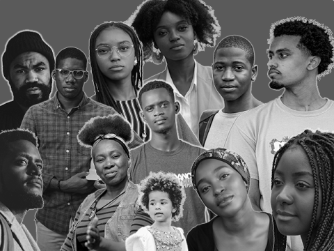
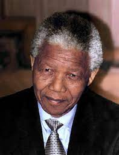
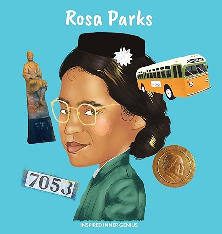

Black History Month

What is Black History Month
Black History Month is an annual celebration held in February to honor the achievements, contributions, and struggles of Black people throughout history. It originated to ensure their significant roles aren't overlooked. During this month, we recognize their successes in various fields and reflect on the challenges they've faced, such as slavery and racism. It's a time to celebrate their resilience, cultural heritage, and ongoing quest for equality and justice. Now let's talk about the 3 most famous black leaders.
Black History Month is celebrated annually in February to recognize the contributions and struggles of the Black community. It began in 1926 and lasted for a week, then extended to a month. Throughout this period, there are discussions, art exhibits, and performances highlighting Black history and culture. It's a chance to learn about influential Black historical figures and occasions, including leaders and civil rights movements. Generally speaking, Black History Month celebrates the accomplishments that Black people have made to society as well as their ongoing fight for equality.
Famous Black People in History
Martin Luther King. JR

Martin Luther King Jr.: He was a key figure in the American civil rights movement during the 1950s and 1960s. Dr. King advocated for nonviolent protest and led campaigns against racial segregation and discrimination. His powerful Black History Month is celebrated annually in February to recognize the contributions and struggles of the Black community. It began in 1926 and lasted for a week, then extended to a month. Throughout this period, there are discussions, art exhibits, and performances highlighting Black history and culture. It's a chance to learn about influential Black historical figures and occasions, including leaders and civil rights movements. Generally speaking, Black History Month celebrates the accomplishments that Black people have made to society as well as their ongoing fight for equality. ul speeches, including the iconic "I Have a Dream '' speech delivered during the March on Washington in 1963, resonated with people across the nation and inspired them to work towards a more just and equitable society.
Nelson Mandela

Nelson Mandela: Mandela was a central figure in the struggle against apartheid in South Africa. He spent 27 years in prison for his activism before emerging as a symbol of reconciliation and unity. Mandela's steadfast commitment to ending racial oppression and his leadership in negotiating the transition to democracy earned him international recognition. In 1994, he became South Africa's first Black president, focusing on healing the wounds of the past and promoting equality for all citizens.
Rosa Parks

Rosa Parks: Parks is often referred to as the "mother of the civil rights movement" for her pivotal role in challenging segregation laws in the United States. In 1955, she refused to give up her seat to a white passenger on a bus in Montgomery, Alabama, igniting the Montgomery Bus Boycott. This protest, which lasted for over a year, marked a significant victory in the fight against racial segregation and inspired a new wave of activism. Parks' courageous act of defiance made her an enduring symbol of resistance and paved the way for greater advancements in civil rights.
List of Books

Rosa Parks
Rosa Parks